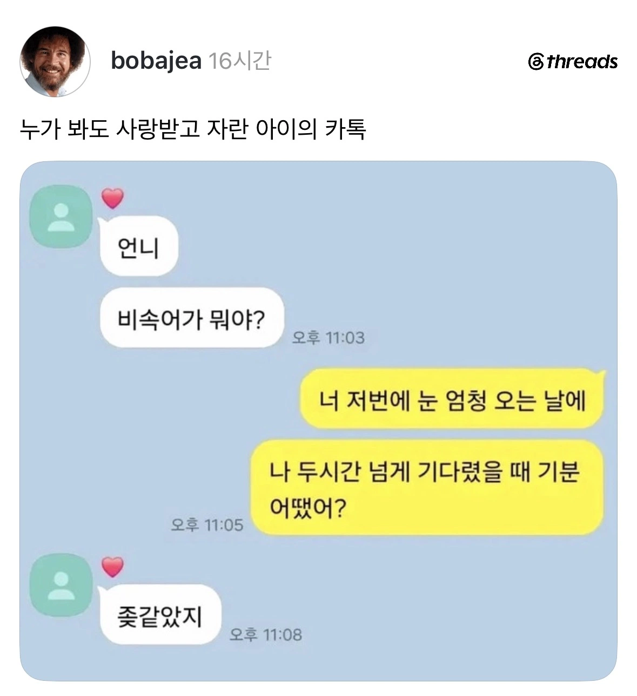

?

?
언니.. 내가 묻어줄게 거기선 잘 살아
보고싶었지..
아차차..
평소에 누군가를 파묻어버리고 싶다는 생각을 자주 하시나요...?
보지
원래 좋았지 그런 뉘앙스 아니었어? ㅋㅋ
보고싶었지
안가르쳐줘도 잘하네~
추웠어
요즘 저거 바리에이션인지 ~~하면 어쩔건데? -> 아쉬운거지 이렇게 쓰는사람 많이보이던데
아쉬운거지는 저거 나오기 전부터 자주 쓰던말 아님? 나 중고딩때도 썼던거같은데
ㄴㄴ 걍 뭐만하면 아쉬운거지~ 이러던데 나도 어떤 유튜버나 인플루언서가 써서 유행어된줄ㅋㅋ
나 옛날부터 게임할때 친구 뒤지면 아쉬운거지~ 이지랄했어서 ㅋㅋㅋ
난 앙기모기모띠띠♡ 라고했음

ㅋㅋㅋㅋㅋ 기출 변형.
그게비속어야
???: 겨우 이정도가?
원래가 뭐였더라... 언니 묻고싶었지였나?